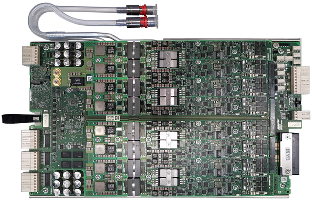

DC Scale FVI16 card
The FVI16 card is a high-current and high-voltage floating VI source that is optimized for a wide range of analog power tests. The card belongs to the DC Scale family and can reside in any channel card slot.
| Supported V93000 systems : Smart Scale (SmarTest 7) |

Electrical design rules
Some specific electrical design rules must be considered for the DC Scale FVI16 card to ensure that the specifications for the card and the maximum ratings for the pogo pins can be met. The following topics describe the FVI16 pins and provide some design rules.
For specification data of the pins, refer to table "Interface characteristics" in FVI16 other specifications.
HV (High-Voltage) protection
The FVI16 card may be connected to low-voltage cards via defective DUTs or unintentionally closed connections. The card provides enough energy to damage the low-voltage cards in this case. Therefore, we recommend that you implement a HV (High-Voltage) protection circuitry on your DUT boards to protect the low-voltage cards. This will improve the uptime of the test system and the throughput of high-voltage applications.
Functional changes
- Introduced in SmarTest 7.5.0